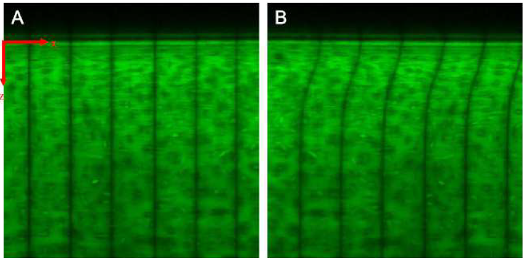

This statistics project focused on analyzing confocal microscopic images of a cartilage sample under sinusoidal shear (image to the right) to quantify the depth dependence of local shear strain and phase angle of the strain. Data was provided and our main goals were to implement visualization techniques and MATLAB algorithms to analyze the images and spatially track the image changes over time.
This project truly solidified my understanding of MATLAB and the multitude to techniques to process data from a series of images. As a stats project, I also used statistical analysis to determine how well my algorithms corresponded with the expected trend of the data.
Additionally, this was a great opportunity to improve my scientific writing, where I compiled a full scientific manuscript for peer-review as seen here.